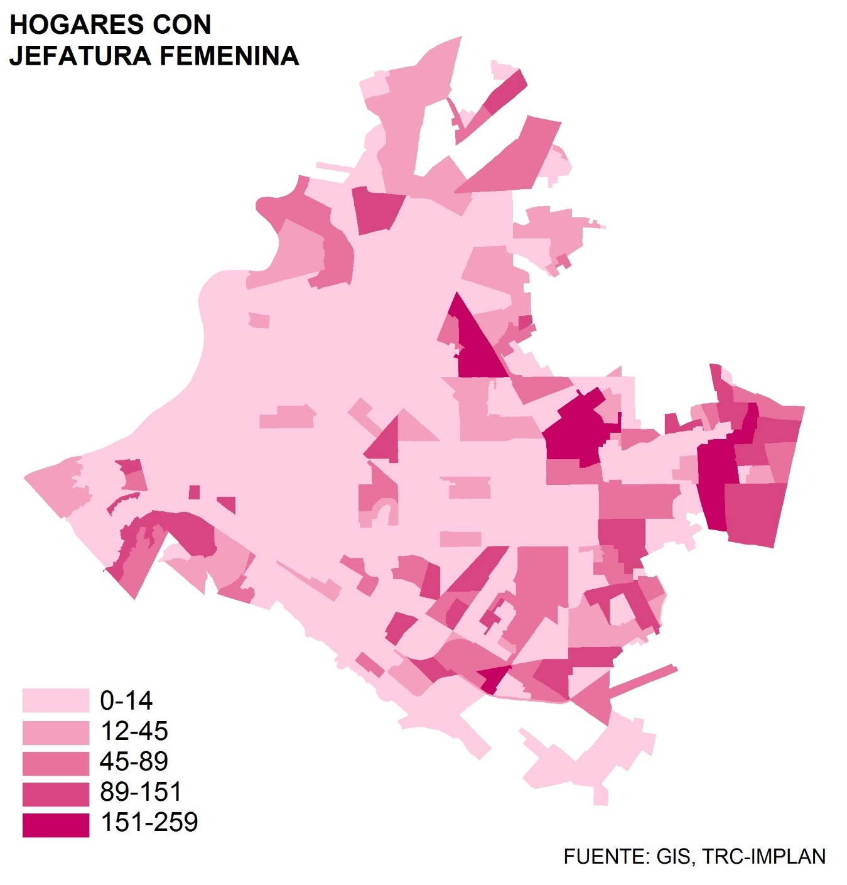

La planeación urbana, como principal instrumento para el diseño de la ciudad, tiene la tarea de estudiar y analizar la población específica de cada comunidad para así responder con estrategias y políticas públicas que atiendan directamente a las necesidades todos los grupos sociales. Para ello, deben tomarse en cuenta las diferentes dimensiones que la componen como son edad, estrato económico, género, etnia, religión, capacidad física etc.
Todas estas ponderadas de manera equitativa para que nunca representen un obstáculo a la hora de acceder a derechos de la ciudad como vivienda, accesibilidad, movilidad, servicios básicos, recreación, etc.
El género representa uno de los factores principales que deben ser tomados en cuenta para la planeación urbana, teniendo como premisa que los hombres y las mujeres habitan y se adaptan a la ciudad de manera diferente; sus actividades, tiempos, recorridos y necesidades no son siempre los mismos y por ello las decisiones urbanas como zonificación, modelo de movilidad, dotación de equipamiento y el diseño de espacios públicos entre otros deben siempre tomarse desde una perspectiva de género.
En culturas occidentales en el pasado, las funciones y actividades han estado definidas en mayor medida por el género: los hombres realizaban casi exclusivamente actividades laborales y de provisión económica, mientras que las mujeres se dedicaban a las tareas domésticas y cuidado de los hijos. Esto significaba una mayor necesidad de movilidad de los hombres mientras que las mujeres requerían un radio menor, lo cual contribuyó entre otros factores, en una perspectiva masculina para diseñar la ciudad.
Hoy día, la brecha de género se ha cerrado en gran medida, sin embargo los hombres y mujeres siguen presentando necesidades distintas. Aunque la mujer ha ganado terreno significativo en el ámbito laboral, sigue teniendo un papel preponderante frente al hombre en las actividades del hogar; esto se traduce en un mayor requerimiento por parte de las mujeres de trasladarse entre la casa y el trabajo de forma frecuente e inmediata, o en algunos casos se tiene la necesidad de realizar ambas actividades en un mismo lugar.
¿Cómo puede aplicarse el enfoque de género en la planeación de la ciudad?
- Elaborar planes de desarrollo urbano que en su dotación de usos de suelo (zonificación) tomen en cuenta los movimientos, necesidades y actividades específicas por género, no solo considerando a un ciudadano neutro.
- Priorizar la zonificación mixta (lo cual beneficia a toda la población) donde el trabajo, la vivienda, los servicios y el ocio se encuentran mezclados en una zona delimitada. Existe "de todo en todos lados", reduciendo distancias de recorrido y multiplicando opciones de vivienda o laborales en radios menores.
- Generar espacios públicos mediante el diseño participativo donde sean considerados aspectos de inseguridad y violencia de género.
- Desarrollar barrios/colonias con diversidad social: diferentes estratos económicos, edades, etnias, religiones etc.
- Dotar de equipamientos complementarios en las distintas zonas habitacionales, para así asegurar la cercanía de servicios necesarios para las actividades del hogar como guarderías, escuelas, centros comunitarios y comerciales.
- Realizar diagnósticos integrales donde se tomen en cuenta indicadores específicos por género, como estructura poblacional, participación en el mercado laboral, jefatura de hogares, inseguridad, violencia de género, ingreso, desarrollo humano etc.

¿Que se está haciendo en Torreón?
El pasado mes de Mayo arrancó el programa "Ciudades Seguras y Libres de Violencia para las Mujeres y Niñas" en el cual, la Administración Municipal en conjunto con ONU-Mujeres, el Colegio de México, la Universidad Autónoma de Coahuila y el Instituto Municipal de la Mujer realizarán como primera acción un diagnóstico donde se pretende identificar las condiciones de seguridad que existen para las mujeres en Torreón.
El programa concluirá en acciones concretas como el desarrollo de políticas de prevención y respuesta a la violencia de género tanto dentro de la vivienda como en el espacio público. A su vez, se realizarán estrategias para lograr la integración de la perspectiva de género en las políticas públicas de desarrollo social y planeación urbana del municipio.
Programa cuarto rosa
A nivel federal, la Secretaría de Desarrollo Agrario, Territorial y Urbano (SEDATU) impulsa actualmente el programa "Un Cuarto Más" o "Cuarto Rosa" donde se pretende combatir el hacinamiento, uno de los principales factores de la violencia de genero dentro de la vivienda. A través de la construcción de una habitación adicional, donde las mujeres, jóvenes y niñas tengan un propio espacio para dormir. El proyecto incluye la construcción de 500 mil "cuartos rosas" en 20 municipios del país.
"La perspectiva de género en la ciudad implica mucho más que tomar en cuenta a las mujeres, significa entender y analizar las diferencias sociales y culturales entre los hombres y las mujeres"
Oscar Alvarado Medina
¿Qué es perspectiva de género?
ONU-Mujeres define la incorporación de perspectiva o enfoque de género como "El Proceso de evaluación de las consecuencias para las mujeres y los hombres de cualquier actividad planificada, inclusive leyes, políticas o programas, en todos los sectores y a todos los niveles. Es una estrategia destinada a hacer que las preocupaciones y experiencias de las mujeres, así como de los hombres, sean un elemento integrante de la elaboración, la aplicación, la supervisión y la evaluación de las políticas y los programas, a fin de que las mujeres y los hombres se beneficien por igual y se impida que se perpetúe la desigualdad. Su objetivo final es lograr la igualdad entre los géneros."
Datos sobre el tema
- Estructura Poblacional en Torreón: 49% (329,932) son hombres y 51% (349,356) son mujeres (INEGI, 2015).
- Hogares con Jefatura Femenina: 27.92% de los hogares en Torreón cuentan con jefatura femenina (Encuesta Intercensal INEGI, 2015).
- Mujeres en la Fuerza Laboral: 43.61% de las mujeres pertenecen a la PEA como proporción del total de mujeres en edad de trabajar (porcentaje de mujeres que trabajan) (IMCO, 2012).
- Ingreso Promedio por Mujer: 0.8 ingreso promedio de las mujeres como proporción del ingreso promedio de los hombres. 1 es la igualdad entre el salario de hombre y mujer (INEGI-ENOE, 2012).